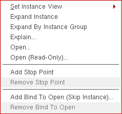

Defining Occurrence-Level Bind-to-Open
You can specify that a single instantiation of a cell is to be skipped by setting a bind-to-open attribute on it.
Only non-text instances, such as schematic instances can be skipped using bind-to-open. Bind-to-open should not be set on hierarchical text instances.
The Hierarchy Editor displays the string **UNBOUND** to indicate that an occurrence has a bind-to-open attribute. **UNBOUND** is not an error, unlike **NONE**. **UNBOUND** indicates that the occurrence is deliberately unbound while **NONE** indicates that the binding for the occurrence could not be determined from the binding rules.
You can only add an occurrence-level bind-to-open attribute in the tree view of the Hierarchy Editor, you cannot add it in the table view.
Setting Bind-to-Open on an Occurrence
To add a bind-to-open attribute to an occurrence,
- Choose View – Tree to display the tree view of the configuration, if it is not already displayed.
-
Turn on the occurrence editing mode by clicking the following Set bindings...on occurrence in the toolbar:
The tree view displays Target: Occurrence. -
Right-click the object on which you want to add an occurrence-level bind-to-open.
The following pop-up menu appears: - From the pop-up menu, select Add Bind To Open (Skip Instance).
The bind-to-open attribute is set on the occurrence. The
icon (occurrence icon) appears next to the occurrence and the library, cell, and view names are replaced by **UNBOUND**. For example:
Removing Occurrence-Level Bind-to-Open
To remove an occurrence-level bind-to-open attribute,
- Choose View – Tree to display the tree view of the configuration, if it is not already displayed.
- Right-click the occurrence from which you want to remove the bind-to-open attribute.
- From the pop-up menu, select Remove Bind To Open.
The occurrence is no longer unbound. The library, cell, and view name are determined based on the other binding rules and displayed.
Related Topics
Rules Definition at the Occurrence Level
Difference between Occurrences and Instances
Return to top